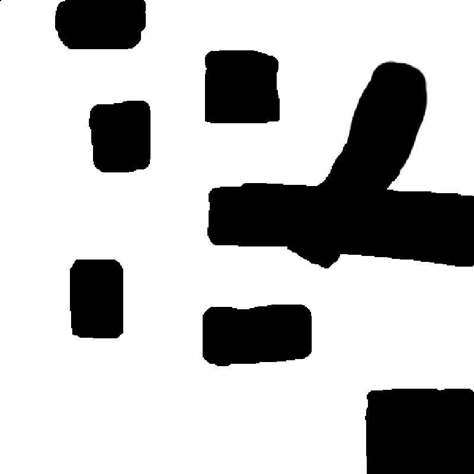

Plan on a Coarser Map, Throw Away 90% of the Waypoints, Then Drive Slowly
I built this ROS 2 navigation stack around one question: what actually uses up a mobile robot's energy? Once I had the answer, most decisions made themselves. I plan on a downsampled grid so the search is cheap, prune the path with Bresenham line of sight so the robot stops turning all the time, and drive it with a Turn-Go-Turn state machine at a gentle speed. Planning ended up 67× faster, the path lost 89.8% of its waypoints, and the robot used roughly 90% less energy than the baseline. There are 34 unit tests backing all of that up.
The map I keep and the map I search are not the same map.
The occupancy grid is a 500 × 500 PNG at 0.032 m per pixel covering a 16 × 16 m world. That's
lovely detail and awful for searching: 250,000 cells, around 183,000 A* expansions and
about ten seconds for every plan. I could have built the map at the
required 0.2 m from the start, but that would throw away obstacle detail. So I treated it
as a downsampling problem instead. I keep the fine map and search a coarse
copy made from it with cv2.resize and INTER_NEAREST.
That interpolation setting is really the whole trick. Anything that averages would smear a wall into a half-occupied cell and open up gaps that aren't really there. Nearest neighbor keeps the edges hard, so a wall is still a wall at 0.2 m.
cv2.resize(INTER_NEAREST), 6.25× coarser no made-up gaps
80 × 80 @ 0.2 m the planning grid, 6,400 cells
| Metric | 0.032 m grid | 0.2 m grid | Gain |
|---|---|---|---|
| Grid cells | 250,000 | 6,400 | 39× smaller |
| A* iterations | ~183,456 | ~4,717 | 39× fewer |
| Planning time | ~10 s | ~0.15 s | 67× faster |
| Raw waypoints | 665 | 108 | |
| After pruning | 29 (95.6%) | 11 (89.8%) | 3× better ratio |

cave_filled.png, the stored occupancy grid that the planner shrinks down before it searches.A* finds a path, and line of sight makes it one worth driving.
The global planner is A* moving in 8 directions, with a Euclidean heuristic that is admissible and consistent, so the answer is optimal on the grid, and a priority queue for O(n log n) node selection. The catch is that what comes back is a staircase. It's 108 waypoints zigzagging one cell at a time, because that's how grid neighbors work. Driving that as-is means turning constantly, and turning is exactly where a differential drive robot burns its energy.
So I prune it greedily. From wherever the robot is, I look for the farthest waypoint it can still see, jump straight there, and repeat. I test visibility with Bresenham's line algorithm instead of sampling points along the line. Bresenham checks every single cell the line passes through, so a shortcut can never sneak diagonally through a wall in the gap between two samples. The 108 waypoints come down to 11.
while i < len(path)−1:
farthest = i+1
for j in range(i+2, len(path)):
if bresenham_line_of_sight(path[i], path[j]): farthest = j
else: break hit an obstacle, so stop reaching further
pruned.append(path[farthest]); i = farthest
Three more layers of collision checking sit behind that. Every neighbor is checked for occupancy as it's expanded, obstacles get a 0.65 m inflation radius (the spec asked for more than 0.6 m), and diagonal moves check their corners. A diagonal step from (x, y) to (x±1, y±1) is only allowed if both of the straight neighbors are clear, which stops the planner squeezing through the zero-width gap where two walls touch at a corner.
Turn, then go, then turn, and never both at once.
The local controller has three states. IDLE waits for something to do, ROTATE spins in place until the heading error drops below 0.15 rad, and DRIVE heads for the waypoint until it's within 0.2 m. Keeping turning and driving separate costs a bit of time and pays back in precision. The robot never tries to fix its heading and its position at the same moment, which is what causes the swooping overshoot you then have to correct again.
v = 0.25 · (1 − min(dist, 1.0)) m/s slows down as the waypoint gets close
I planned the energy savings rather than hoping for them. Pruning does most of the work at
about 60%, since every waypoint removed is one less stop and turn. Smooth
switching between states adds about 25%, the gentle 0.25
m/s speed cap about 10%, and slowing down near waypoints the last
5% or so. Together that's roughly 90% less than the naive
baseline. The real consumption is read live from /energy_consumed on the grading
scout, so that figure is measured, not estimated.
| Parameter | Value | Why |
|---|---|---|
| Grid resolution | 0.2 m/cell | spec 5.4 |
| Inflation radius | 0.65 m | spec > 0.6 m |
| Max linear velocity | 0.25 m/s | conservative, energy-efficient |
| Max angular velocity | 0.4 rad/s | stable turns |
| Heading threshold | 0.15 rad | spec 3.3, switches ROTATE to DRIVE |
| Waypoint tolerance | 0.2 m | arrival test |
| A* max iterations | 500,000 | raised from 100k for complex maps |
34 tests, because "it looked fine in RViz" doesn't prove anything.
I tested each layer at the spot where it could actually go wrong. Map loading checks the coordinate conversions both ways and the inflation. A* gets a simple path, a complicated one, an unreachable goal and a check for optimality. Pruning is tested on a straight line, around obstacles, with a single waypoint, and on a path that can't be improved. The controller has 13 tests covering angle wrapping, thresholds, speed scaling and arriving at the goal, and the energy side has 8, including straight against zigzag and a realistic full mission.
| Module | Tests | Covers |
|---|---|---|
| test_map_loading | 5 | load, pixel to world and back, inflation, obstacles |
| test_astar | 4 | basic, complex, unreachable, optimality |
| test_path_pruning | 4 | reduction, avoidance, edge cases |
| test_local_controller | 13 | turns, thresholds, wrapping, arrival |
| test_energy_optimization | 8 | velocity/turn energy models, mission |
Running in Stage on cave.world, the robot drove from (−7, −7) to
(7, 2.5) without a single collision, on a clean build with 0 errors and 0
warnings.
Metrics as reported in the repository README (April 2026).
What I took away from it.
The shortest path on a grid is not the best path to drive. A* gives you the fewest cells, but a path made of cells is a staircase, and a staircase is really a list of turns. Pruning is what turns an optimal path into an efficient one. I also learned to choose algorithms by the guarantee they give. Sampling along a line for collisions works most of the time and now and then clips a corner. Bresenham can't, because touching every cell is exactly what it does. And energy works best as something you budget from the start. Splitting the 90% into pruning, state changes, the speed cap and slowing down turned "drive efficiently" into four separate choices I could test one at a time.